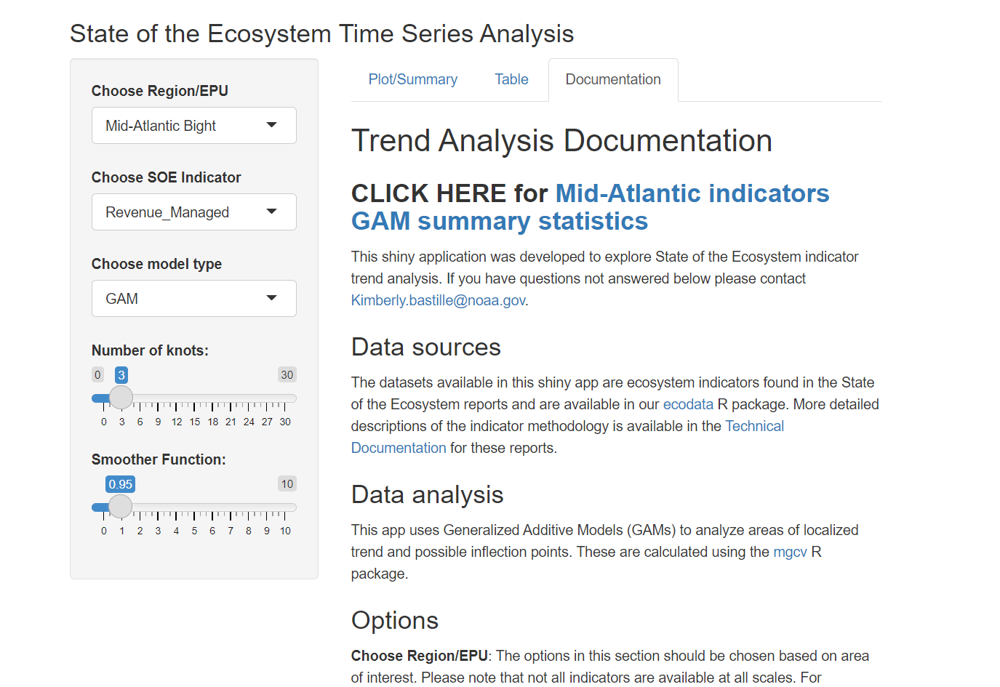

3 State of the Ecosystem Time Series Analysis
Apps Name: State of the Ecosystem Time Series Analysis
Developer(s): Kimberly Bastille
Point of contact: Kimberly Bastille, kimberly.bastille@noaa.gov (EDAB)
Keywords: SOE, IEA, Trend Analysis, GAM
Key Packages: NOAA-EDAB/ecodata, DT, tidyr, dplyr, ggplot2, mgcv
GitHub: kimberly-bastille/soetrends
3.1 Application Purpose
The purpose of this shiny app is to explore Generlized Additive Models for ecosystem indicators used in the State of the Ecosystem reports. The State of the Ecosystem reports are compiled to present synthesized ecosystem information to fisheries managers in New England and the Mid-Altantic. The trends applied to timeseries over 30 years are linear and from request from the science and statistical committees we are exploring more complex trends using GAMs. This shiny app can be used to explore time series analysis for datasets where it appears linear may not be the most appropriate.
3.1.1 GAM Plots
Many datasets included in the State of the Ecosystem reports are loaded into this app. The figure shows that data points and the current SOE trend line in solid orange or purple depending on positive or negative trends. The GAM can be scaled with the knots and smoother function slider and are visualized by dashed line where areas with significant trends are colored either orange or purple depending on whether it is a positive or negative significant trend.

3.1.2 Downloadable data
Once the best trend line is chosen the predicted values are made available in the “Table” tab of the app. This table includes a predicted GAM fit and predicted standard error as well as the original dataset.

3.1.3 Documentation
The final tab of this app holds the documentation for this app including where to find more details on each dataset and the specific manipulability of the tool. This section also includes a link to some summary statistics for the Mid-Atlantic datasets.

3.2 How often is it used?
Currently this app is used within EDAB during the synthesis discussions. The goal, however, is to have Mid-Atlantic council use this tool to help inform their risk assessmet. This shiny app shows has tools for model selection and has the data downloadable for use in other products.
3.3 Has it been used in management?
Not yet but that is the goal.